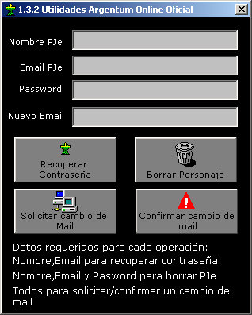
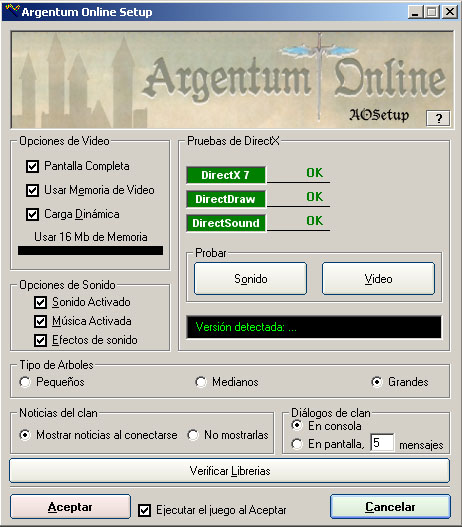
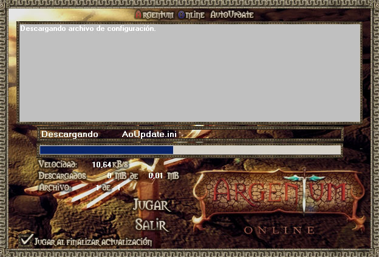

RECUPERAR UN PERSONAJE
Cuando crees un personaje tenés que ingresar una dirección de e-mail válida, ya que será el único medio por el cual podrás recuperar la contraseña en caso de olvidarla y la herramienta con la que se compruebe la apropiación del personaje (ver Reglamento del Juego).
Los robos de personajes son comunes y tienen varias causas. Una muy frecuente es el uso de keyloggers en cibers. Estos programas guardan todo lo tipeado, incluyendo obviamente contraseñas del personaje, otra razón por la cual se recomienda tener el personaje registrado a una cuenta de e-mail real.
Recuerda que se encuentra habilitado el SISTEMA DE CAMBIO DE E-MAIL DE PERSONAJES, al cual se accede desde el botón RECUPERAR CONTRASEÑA o ejecutando el programa RECUPERAR.EXE que está en la carpeta de instalación de Argentum Online.
Para recuperar la contraseña de un personaje te pedirá el nombre del personaje y el e-mail al que fue registrado, finalmente te llegará un correo a esa casilla -si realmente coincide con la registrada-, con una nueva contraseña aleatoria dada por el servidor, con la que podrás acceder al personaje, y luego cambiarla desde el juego, en Opciones.

BORRAR UN PERSONAJE
Para borrar un personaje se accede desde el botón RECUPERAR CONTRASEÑA o ejecutando el programa RECUPERAR.EXE que está en la carpeta de instalación de Argentum Online.
Una vez elegida la opción de borrar personaje, si la contraseña introducida es la correcta, te aparecerá una ventana con un mensaje de confirmación. Luego de ello, podrás volver a crear un personaje con ese mismo nombre.
Importante: No se pueden borrar personajes de nivel 14 en adelante.
AOSETUP
Para iniciar este programa, entrá en la carpeta de instalación de Argentum Online y ejecutá el AOSETUP.EXE,la cual te permitirá configurar el Argentum Online.
OPCIONES DE VIDEO
Pantalla Completa: al estar activado siempre verás el juego en pantalla completa aunque uses una resolución de pantalla de 1024x768 o más.
Usar Memoria de Video: permite usar la memoria de video, es posible que si está activado tengas algunos problemas como ver la pantalla de juego toda negra o tener bajos FPS, en cualquier de estos casos destildá esta opción y problema solucionado.
Carga Dinámica: al estar activado se cargarán todos los gráficos cada vez que inices el juego y esto tarda demasiado tiempo, no se recomienda activarlo a menos que tengas bajos FPS.
Uso de MBs de Memoria: permite configurar la cantidad de memoria a usar, cuanto más pongas, más rápido cargará el juego.
OPCIONES DE SONIDO
Sonido Activado: permite desactivar/activar los sonidos del juego por defecto, así que si lo desactivas, cada vez que abras el juego empezará sin sonido.
Música Activado: permite desactivar/activar la música del juego por defecto, así que si lo desactivas, cada vez que abras el juego empezará sin música.
PRUEBAS
Permite probar el sonido y el video del juego.
VERIFICAR LIBRERIAS
Permite verificar si las librerias del juego (.ocx, .dll) están correctamente registradas en la pc, si en algún momento surge un error como "RunTime Error" o "Automation Error" es a causa de esto, así que corre el aosetup y verifica las librerias.
TIPO DE ARBOLES
Grandes: Verás los árboles y techos originales del juego.
Medianos: Verás los arboles y techos, transparentados, para mejorar la visibilidad en ciertas áreas.
Pequeños: Verás los árboles en miniatura, para facilitar la visión, y los techos transparentados.
NOTICIAS DEL CLAN
Permite elegir si deseas ver las noticias de tu clan al conectarte al juego.
DIALOGOS DE CLAN
Permite elegir si deseas ver los dialogos de clan, en la consola o dentro de la pantalla de juego.

AUTOUPDATER
Para iniciar este programa, solo deberás ejecutar el cliente del juego o entrar en la carpeta de instalación de Argentum Online y ejecutar el AOUPDATE.EXE.
La función que cumple el mismo, es de auto actualizar todo el juego. Sólo deberás descargar nuevamente el instalador del juego si cambia de versión, ya que todas las actualizaciones (parches) se realizarán por esta vía.

|
|